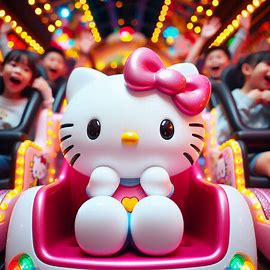

O Hello Kitty Magical World Tour é um projeto global que combina a experiência imersiva dos parques temáticos, a decoração encantadora, e a missão social da Hello Kitty & Co. para criar uma série de eventos e experiências únicas ao redor do mundo. O objetivo é levar a magia da Hello Kitty a novos públicos, fortalecer a marca e contribuir para a comunidade global de uma maneira significativa.

-
O Mundo da Hello Kitty: Pop-Up Experience:
Uma série de pop-ups temporários que representarão diferentes "mundos mágicos" da Hello Kitty em grandes cidades ao redor do mundo. Cada pop-up terá uma decoração temática imersiva, incluindo áreas interativas, produtos exclusivos e eventos especiais.
Objetivos:
Criar uma experiência imersiva e única que atraia visitantes e fãs.
Oferecer produtos e colecionáveis exclusivos, aumentando o engajamento com a marca.
Reforçar a presença da Hello Kitty em mercados internacionais.
Localização: Grandes cidades como Nova York, Paris, Tóquio, São Paulo e Sydney.
Atividades:
Área de Experiência: Cenários temáticos com decoração da Hello Kitty.
Loja Exclusiva: Produtos e edições limitadas disponíveis apenas no pop-up.
Eventos ao Vivo: Encontros com personagens, oficinas de artesanato e demonstrações de culinária.
-
Hello Kitty Magical Caravan:
Um caminhão temático que viajará por diferentes regiões, oferecendo experiências móveis inspiradas na Hello Kitty. O caminhão será um espaço multifuncional com áreas de atividades, um mini café e uma loja.
Objetivos:
Levar a experiência da Hello Kitty a comunidades e cidades menores.
Criar uma sensação de exclusividade e novidade.
Promover o engajamento direto com os fãs em diferentes locais.
Atividades:
Área de atividades: Jogos interativos e desafios inspirados na Hello Kitty.
Mini Café: Bebidas e doces temáticos.
Loja Móvel: Produtos exclusivos e souvenirs.
-
Hello Kitty Eco-Friendly Festival:
Um festival dedicado à sustentabilidade, com foco em produtos ecológicos da Hello Kitty e iniciativas de conscientização ambiental. O festival contará com estandes de produtos sustentáveis, oficinas educacionais e atividades para crianças.
Objetivos:
Promover a linha de produtos eco-friendly da Hello Kitty.
Educar o público sobre práticas sustentáveis.
Engajar a comunidade em iniciativas ambientais.
Atividades:
Estandes de Produtos: Exposição e venda de itens sustentáveis.
Oficinas: Atividades para criar produtos ecológicos e aprender sobre reciclagem.
Palestras: Sessões educativas com especialistas em sustentabilidade.
- Hello Kitty Charity Gala:
Um evento anual de gala para arrecadar fundos para a Hello Kitty Charity Foundation, que apoia causas sociais e comunitárias. O evento incluirá um jantar de gala, leilões silenciosos e apresentações especiais.
Objetivos:
Levantar fundos para causas sociais importantes.
Reforçar a imagem da Hello Kitty & Co. como uma marca socialmente responsável.
Engajar celebridades e influenciadores em apoio às causas da fundação.
Atividades:
Jantar de Gala: Menu especial e entretenimento ao vivo.
Leilão Silencioso: Itens exclusivos e experiências especiais.
Apresentações: Show de talentos e discursos de apoio.
- Hello Kitty Digital Adventure:
Um aplicativo móvel que oferece uma série de experiências interativas baseadas na Hello Kitty. O aplicativo incluirá jogos, desafios de realidade aumentada e uma comunidade online onde os usuários podem compartilhar suas experiências.
Objetivos:
Ampliar a presença digital da Hello Kitty.
Engajar o público jovem com experiências interativas e gamificadas.
Oferecer uma plataforma para os fãs interagirem e compartilharem suas aventuras.
Atividades:
Jogos e Desafios: Jogos temáticos e desafios diários.
Realidade Aumentada: Experiências imersivas usando AR.
Comunidade Online: Espaço para os fãs compartilharem e interagirem.
O Hello Kitty Magical World Tour é um projeto que visa expandir o alcance e o impacto da Hello Kitty & Co., combinando experiências imersivas e inovadoras com um forte compromisso social e ambiental. Através dessas iniciativas, a empresa poderá fortalecer sua marca, engajar novos públicos e fazer a diferença no mundo.